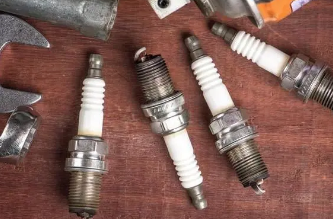

Publications

Computer Vision
PTDS CenterTrack: Pedestrian Tracking in Dense Scenes with Re-Identification and Feature Enhancement
Jiazheng Wen, Huanyu Liu, Junbao Li.
Machine Vision and Applications.
paper
Jiazheng Wen, Huanyu Liu, Junbao Li.
Machine Vision and Applications.
paper
In this work, we propose PTDS(Pedestrian Tracking in Dense Scene) CenterTrack based on the CenterTrack for object center point detection and tracking.
Reinforcement Learning
Computer Vision
A Task-Risk Consistency Object Detection Framework Based on Deep Reinforcement Learning
Jiazheng Wen, Huanyu Liu, Junbao Li.
Remoter Sensing-Special Issue: Artificial Intelligence Algorithm for Remote Sensing Imagery Processing III.
project page / paper
Jiazheng Wen, Huanyu Liu, Junbao Li.
Remoter Sensing-Special Issue: Artificial Intelligence Algorithm for Remote Sensing Imagery Processing III.
project page / paper
This study introduces a Task-Risk Consistent Intelligent Detection Framework (TRC-ODF) for object detection in optical remote sensing images.

Computer Vision
An intelligent spark plug appearance defect detection system
Yan Cang, Jiazheng Wen, Yulong Qiao, Chunyu Chen.
Patent.
patent page
Yan Cang, Jiazheng Wen, Yulong Qiao, Chunyu Chen.
Patent.
patent page
The present invention belongs to the field of image processing and specifically relates to an intelligent spark plug appearance defect detection system